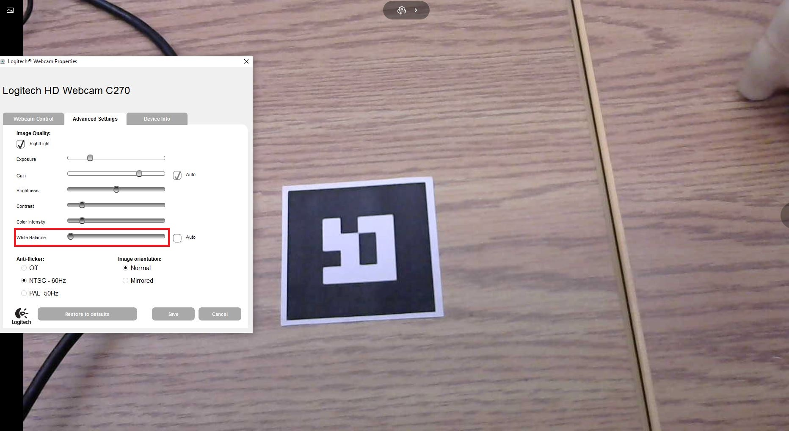
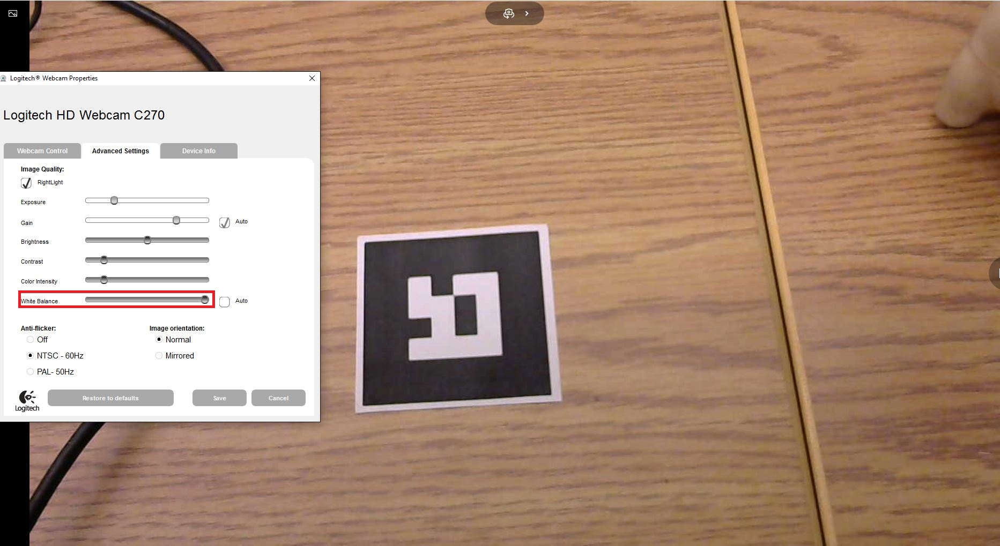

En réalité augmentée la luminosité de la pièce est très importante. En effet, il faut faire attention à la luminosité dans la pièce où nous faisons notre capture. Il faut aussi prendre en compte la couleur des objets autour du marqueur. Par exemple, si nous capturons un marqueur sur un fond blanc, la lumière du plafond reflètera certainement vers la caméra, ce qui entrainera un blanchissement de l’image, et donc de la difficulté pour bien détecter le marqueur. Comme discuté dans un des billets précédent, nous pouvons contrer le reflet de lumière dans la caméra avec une surface noire autour du marqueur. Et si nous n’avions pas de surface noire en notre possession ? Nous pouvons toujours jouer dans les paramètres d’affichage de la caméra ! Nous avons découvert que la balance des blancs pouvait aider dans notre quête de la détection de marqueur. Voici nos observations :
Dans cette image, la balance des blancs est dans le minimum. Cela créer un effet de blanchissement et on peut comprendre que si la totalité de la capture est un peu plus blanc que ce qu’elle devrait être, la détection du marqueur sera plus ardu. Si vous avez de la difficulté à remarque le blanchissement de l’image, voici la même image avec un ajustement de la balance des blancs qui rend les couleurs plus réel :
Maintenant, les couleurs se distinguent mieux et nous avons plus de facilité à détecter le marqueur. En lien avec ce sujet, plus tard, nous verrons comment la détection de marqueur gère les fonds qui peuvent être trompeur, comme les quadriller.
Vincent a recherché un moyen de faire déplacer la balle à l’intérieur du labyrinthe. Nous en somme arrivé à la conclusion que la meilleure façon serait d’utiliser l’engin physique d’unity. Pour ce faire, nous pouvons utiliser 3 méthodes :